Some photos on this website are taken from Wikimedia Commons and are used under their free licences. Photos have been resized. Click on a title to see the original file, author and full licence.
| Photo | Original File | Author | Licence |
|---|
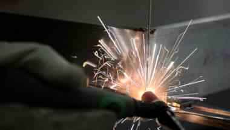 | Welding Aluminium Picture Frame.jpg | Art Graphics | CC BY-SA 4.0 |
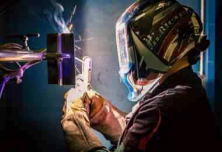 | US Army soldier welding two metal pieces, Fort Gregg-Adams, Virginia, March 2025.jpg | Juan F. Jimenez, Army | Public domain |
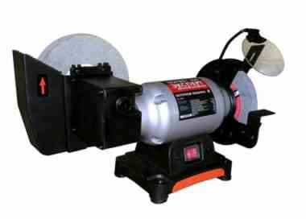 | Bench Grinder.jpg | Артём В. | CC BY-SA 4.0 |
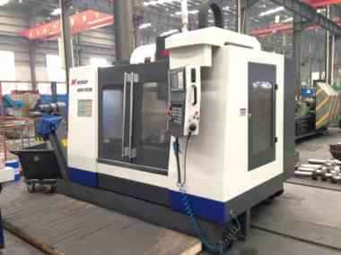 | Fabriko de Sichuan Jinxing Compressor Manufacturing Co., Ltd 03.jpg | RG72 | CC BY-SA 4.0 |
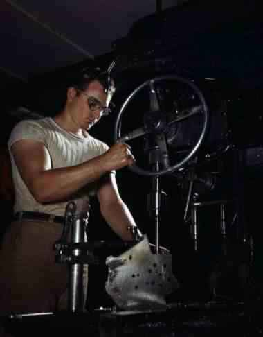 | Drill press operator fsac 1a35306.jpg | Alfred T. Palmer, United States Office of War Information | Public domain |
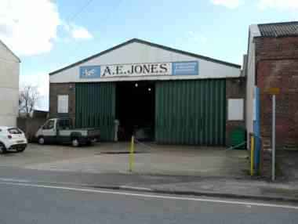 | Metal fabrication workshop, Mortimer Street - geograph.org.uk - 3419880.jpg | Humphrey Bolton | CC BY-SA 2.0 |
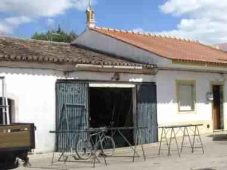 | 2017-03-01 Metal fabrication workshop, Algoz.JPG | Kolforn (Kolforn)
I'd appreciate if you could mail me (Kolforn@gmail.com) if you | CC BY-SA 4.0 |
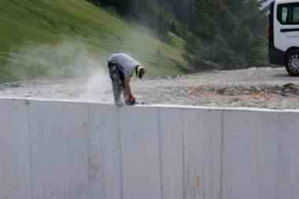 | Faschina-concrete angle grinder-Betontrennschleifen-01ASD.jpg | Asurnipal | CC BY-SA 4.0 |
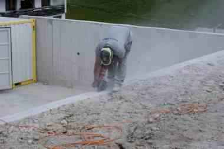 | Faschina-concrete angle grinder-Betontrennschleifen-03ASD.jpg | Asurnipal | CC BY-SA 4.0 |
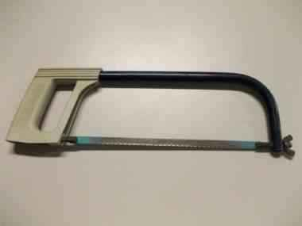 | Hacksaw with grey handle.jpg | Luke Milburn | CC BY 2.0 |
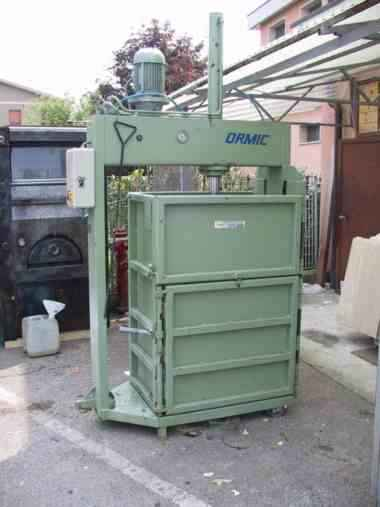 | Hydraulic press 1.jpg | Eugenio Cosolo | Public domain |
 | Workshop lathe machine.jpg | Sunnybansodeva | CC BY-SA 4.0 |
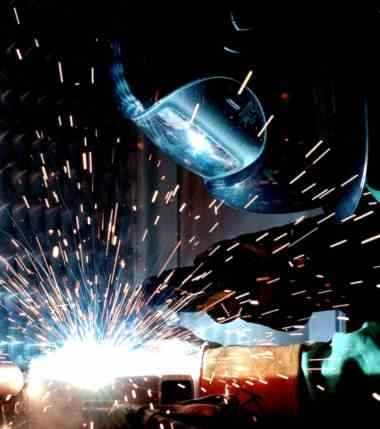 | GMAW.welding.af.ncs.jpg | William M. Plate Jr. | Public domain |
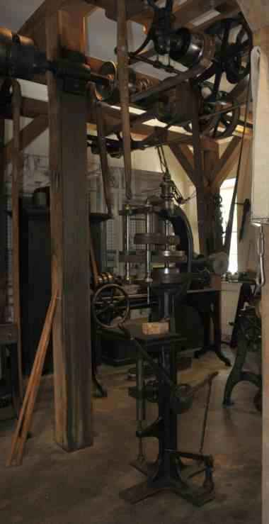 | Harpers Ferry gun smith shop - drill press - 01.jpg | Jarek Tuszyński | CC BY 4.0 |
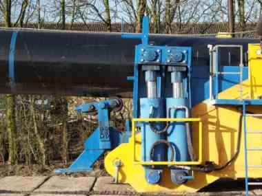 | Vietz EV 42- 56 pipe bending machine with pipe after bending.JPG | Alf van Beem | CC0 |
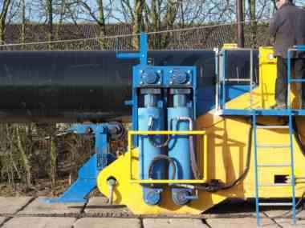 | Vietz EV 42- 56 pipe bending machine with pipe before bending.JPG | Alf van Beem | CC0 |
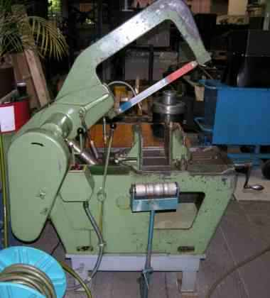 | SawMachine.jpg | MyName (Audriusa) | CC BY-SA 3.0 |
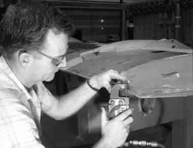 | 23 0068172 Convair Negative Image - Convair employee using riveting tool 01-30-1962 (54183375619).jpg | San Diego Air & Space Museum Archives | Public domain |
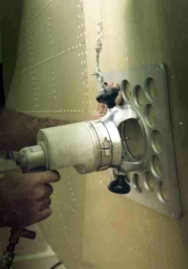 | 23 0049065 Convair Negative Image - Convair employee using riveting tool (53837196593).jpg | San Diego Air & Space Museum Archives | Public domain |
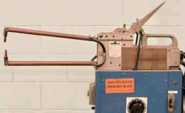 | Spot welder (Miller 12,000 amp model).jpg | Triddle | CC0 |
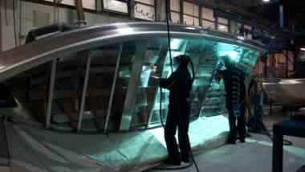 | Buster-aluminium-boat-welding-Inha-Works.jpg | Mikasarkijarvi | CC0 |
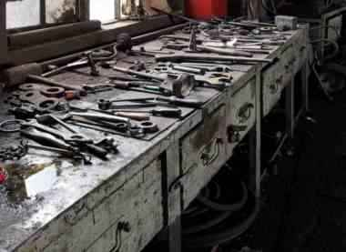 | Railway workshop museum exhibition in Ljubljana, Slovenia.jpg | Petar Milošević | CC BY-SA 4.0 |
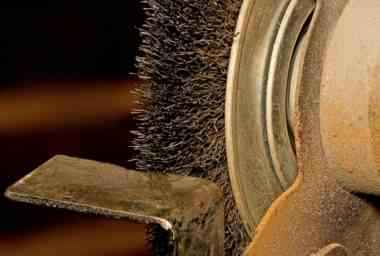 | Bench Grinder Brush 1.jpg | Noodle snacks | CC BY-SA 3.0 |
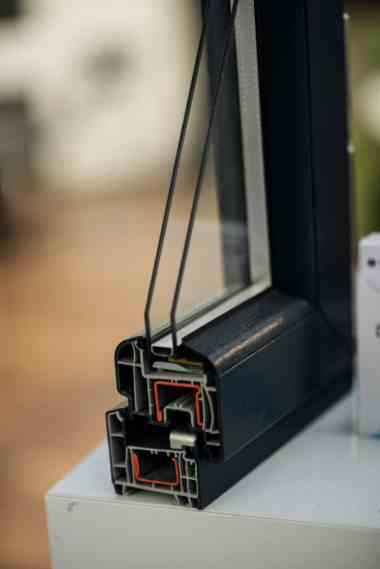 | Detailed view of a cross-section of a modern window frame shows multiple materials and insulation layers.jpg | Shixart1985 | CC BY 2.0 |
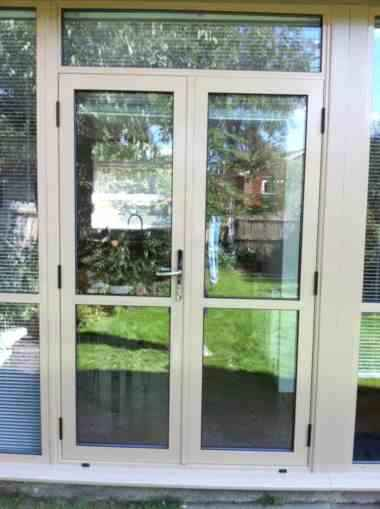 | Aluminium Door 02.jpg | Nissanak glass | CC BY-SA 4.0 |
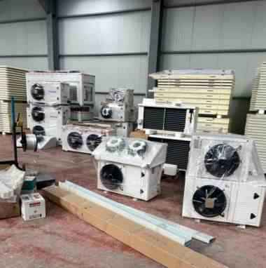 | Cold Room Products - Mix - Door - Refrigeration - Evaporator - Panel.jpg | Mesadbal | CC BY 4.0 |
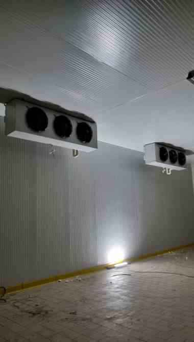 | Cold Room After Installation.jpg | Mesadbal | CC BY 4.0 |
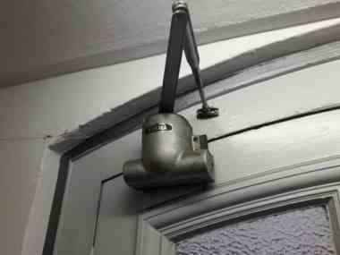 | Dorma door closer (TU Berlin).jpg | MB-one | CC BY-SA 4.0 |
| Revolute joint in door handle IMG 2258c.jpg | JonRichfield | CC BY-SA 4.0 |
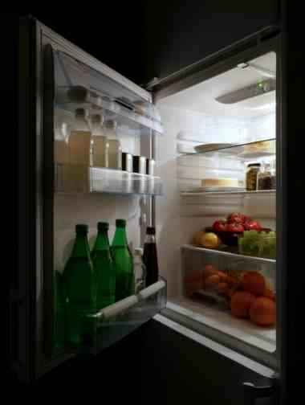 | Open refrigerator with food at night.jpg | W.carter | CC BY-SA 4.0 |
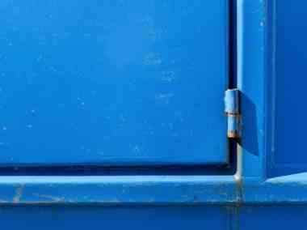 | Hinge on blue dumpster.jpg | W.carter | CC0 |
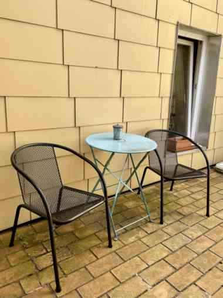 | Steel furniture in a studio backyard in Germany.jpeg | Ditigibt | Public domain |
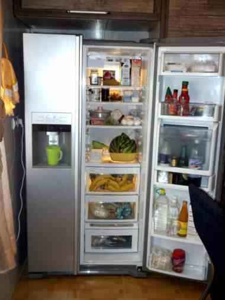 | LG refrigerator interior.jpg | Milad Mosapoor | Attribution |
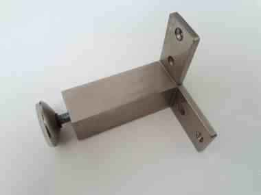 | Square stainless steel furniture leg - A.jpg | Fructibus | CC0 |
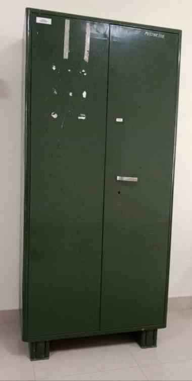 | Steel Cupboard.jpg | Muthukumaran Esakkiappan | CC BY-SA 4.0 |
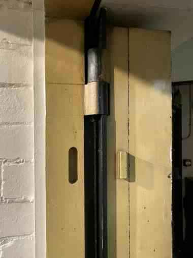 | Reinforced steel door - geograph.org.uk - 8090584.jpg | Alan Hughes | CC BY-SA 2.0 |
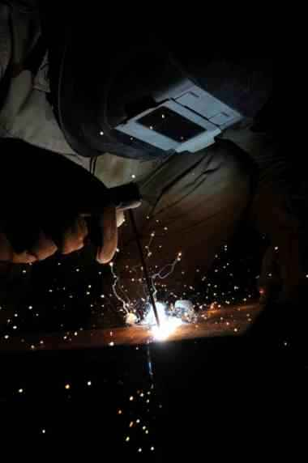 | US Navy 110508-N-TC501-167 Steel Worker 3rd Class Bernard Barbuto welds a door frame for a k-span building.jpg | U.S. Navy photo by Mass Communication Specialist 3rd Class Christopher Carson | Public domain |
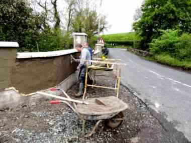 | Plastering a wall, Donaghanie - geograph.org.uk - 5784055.jpg | Kenneth Allen | CC BY-SA 2.0 |
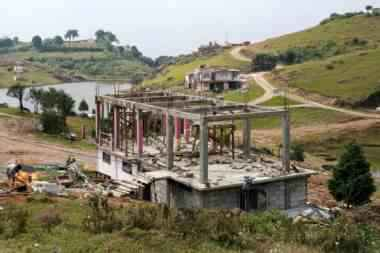 | Building Construction Mawphanlur Khasi Hills Oct24 A7CR 04333.jpg | Timothy A. Gonsalves | CC BY-SA 4.0 |
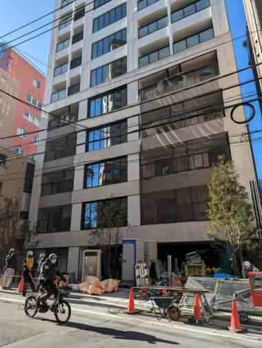 | Construction of a new residential building in Ebisu.jpg | Syced | CC0 |
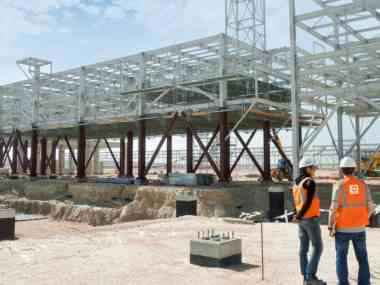 | Catari us scaffolding piperack.jpg | Stéphane Leite | CC BY-SA 4.0 |
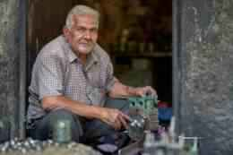 | India, Mumbai, artisan mechanic.jpg | Vladimir Buynevich | CC BY 2.0 |
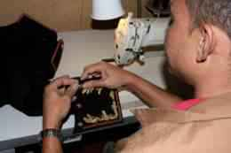 | USMC-081007-M-5728E-18.jpg | Unknown | Public domain |
| Electrician at work, Goa, India. 3.jpg | Fredericknoronha | CC BY-SA 4.0 |
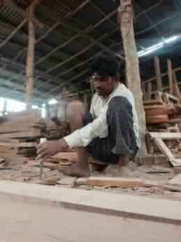 | Skilled Carpenter Working on Wood in a Workshop 02.jpg | The open draft | CC BY-SA 4.0 |


.jpg){kind=link}
.jpg){kind=link}
.jpg){kind=link}


.jpg){kind=link}